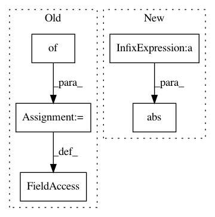

ac0251e0f6a983936ab67f274cd345394f393de6,cscs-checks/apps/quantumespresso/quantumespresso_check.py,QuantumESPRESSOGpuCheck,__init__,#QuantumESPRESSOGpuCheck#Any#Any#,86
Before Change
super().__init__()
self.descr = "QuantumESPRESSO GPU check (version: %s, %s)" % (scale, variant)
self.valid_systems = ["daint:gpu"]
self.variables = {"CRAY_CUDA_MPS": "1"}
self.num_gpus_per_node = 1
if scale == "small":
self.valid_systems += ["dom:gpu"]
self.num_tasks = 6
After Change
energy = sn.extractsingle(r"!\s+total energy\s+=\s+(?P<energy>\S+) Ry",
self.stdout, "energy", float)
energy_diff = sn.abs(energy-energy_reference)
self.sanity_patterns = sn.all([
sn.assert_lt(energy_diff, 1e-8)
])
In pattern: SUPERPATTERN
Frequency: 3
Non-data size: 5
Instances
Project Name: eth-cscs/reframe
Commit Name: ac0251e0f6a983936ab67f274cd345394f393de6
Time: 2020-04-17
Author: lucamar@cscs.ch
File Name: cscs-checks/apps/quantumespresso/quantumespresso_check.py
Class Name: QuantumESPRESSOGpuCheck
Method Name: __init__
Project Name: eth-cscs/reframe
Commit Name: 57a0bb0515d5b80904329fa7b6f5b3edc6fd5b91
Time: 2018-03-20
Author: rafael.sarmiento@cscs.ch
File Name: cscs-checks/apps/lammps/lammps_check.py
Class Name: LAMMPSBaseCheck
Method Name: __init__
Project Name: epfl-lts2/pygsp
Commit Name: e5f32aaf88d7190cdecb8a6d9cec01054cf3cd9c
Time: 2015-11-24
Author: lionel.martin@epfl.ch
File Name: pygsp/graphs/nngraphs/nngraph.py
Class Name: NNGraph
Method Name: __init__